Abstract
This study investigates the impact of foreign immigration on rental rates and owneroccupied house prices in metropolitan areas in the United States. Using a panel dataset that covers 381 American metropolitan areas from 2013 to 2022, I demonstrate that immigration may have a significantly positive short-term effect on housing prices. After implementing a version of the classic shift-share instrument to control for the endogeneity of immigration and housing costs, I find that a 1% increase in immigrant concentration as a proportion of total metropolitan area population leads to about a 2% increase in rental rates and a 3% increase in house prices. However, when I decompose the total effect of immigration on housing costs into the effect solely due to increases in immigrant demand and the effect due to induced native migration, I discover that only 18.4% of the total effect on housing costs can be attributed to direct demand from immigrant inflow. Lastly, I find that the impact of immigration on house prices is significantly higher at the upper end of the house price distribution.
Acknowledgements
First and foremost, I would like to thank my advisor, Professor Richard Sicotte, for his continued encouragement throughout this entire process. I am incredibly grateful for his guidance and expertise.
Thank you to Professor Sicotte, Professor Peter Henne, and Professor Erkmen Aslim for generously taking the time to sit on my thesis defense committee. Their feedback is greatly appreciated.
I would also like to thank Professor Sicotte, Professor Aslim, as well as Professor Donna Ramirez-Harrington for molding me into a better economist during my time at UVM. Their instruction has been pivotal in developing the analytical and econometric skills necessary to undertake a project of this magnitude. Their support for me while my project was still in its early stages is not to be overlooked.
Finally, I would like to thank my parents for instilling in me a love of learning and for pushing me to achieve more than I ever knew I was capable of in the classroom. I owe everything to both of you.
1 Introduction
Immigration has always been a hotly debated topic in American political circles, though it has emerged as a particularly divisive issue as the 21st century has progressed. The debate surrounding immigration policy is not unfounded; the U.S. has historically been a prime destination for immigrants from all corners of the globe. In more recent times, these immigration trends have not shown any signs of slowing down. In 2025, about 53.3 million immigrants are estimated to live in the United States, comprising about 16% of the country’s population (Carmotta & Zeigler, 2025). More importantly, immigrant inflows have been quite substantial, as since 2009, the immigrant population in the United States grew by about 16 million, which would equate to about a 43% increase in the country’s total immigrant stock. This growth is far from insignificant: for example, immigration is estimated to account for more than 80% of the overall U.S. population growth in 2024 (Congressional Budget Office, 2024). Clearly, immigration is a primary driver of demographic changes in the United States. It is also a pivotal factor dictating changes in economic trends.
The economic outcomes most often linked to immigration pertain to the labor market. In both the academic literature and the political discourse surrounding the effects on immigration in the U.S., much effort has been dedicated to showing the impacts of immigration on labor market outcomes such as the wage rate and employment of native-born workers. However, the impact of immigrants on other sectors of the U.S. economy is largely overlooked. One of those sectors that has only recently surged to the forefront of the immigration literature is the housing market.
The state of the housing market has always been considered a key barometer of the economic health of almost any developed nation, and the U.S. is no different in that regard. The housing market represents another domain in which immigrants potentially compete with nativeborn individuals; much concern has been expressed that immigration drives up housing costs and displaces incumbent native-born residents. Indeed, housing costs are rising in a manner similar to the American immigrant stock: since 2011, the median monthly rate for a rental unit in the United States has increased almost 19%, while the median value of an owner-occupied home has grown by about 44% (Fabina, 2024). Given that the growth in immigrant population in the U.S. during the 2010s and into the 2020s has mirrored the growth in housing costs, there is reason to believe that there may be a causal link between the two.
This paper provides evidence that, in the short term, immigration may, in fact, lead to higher rents and house prices. To accomplish this, I utilize a panel of 381 metropolitan areas in the United States over the period from 2013 to 2022. The fact that immigrant inflows may be endogenous to rental rates and house prices poses an issue of reverse causality that I attempt to resolve through the use of a shift-share instrument. This strategy essentially entails using past immigrant settlement patterns to predict future inflows. Using this instrumental variable technique, I estimate that immigration has a significantly positive short-term effect on both rental rates and house prices. My results indicate that an increase in immigrant inflow equal to 1% of a metropolitan area’s population equates to around a 2% in rental rates and a 3% increase in house prices. This type of an effect, which has been observed throughout the relevant literature, suggests that immigrants do not displace natives through competition for vacant housing. In fact, not only do my findings insinuate that native displacement is not occurring, through my decomposition of the total demand effect of immigration on the housing market into the effects from direct demand of immigrants and induced demand caused by native migration, I find that substantial native inflow is expected to accompany immigrant inflow. Because of this, I estimate that only 18.4% of the total demand effect of immigration on rental rates and house prices is actually due to immigration. Finally, I suspect that immigration may not have the same effect in areas where house prices are rising as it does in areas where they are falling or not growing quickly. I find that, while there is no statistically significant difference between the effects of immigration on the lower and upper ends of the rent distribution, immigration has a more profound effect on the upper end of the house price distribution.
This study makes several important contributions to the economic literature surrounding the effect of immigration on the housing market. First of all, most papers that concern the effect of immigration on the housing market in the United States are quite limited in terms of geographical scope, with a number of such studies analyzing only one region or city, such as New York City (Finney, 2024) or Miami (Card, 1990; Saiz, 2003). Saiz (2007) and Partridge, et. al. (2009) do estimate the effects of immigration on rental rates and house prices in the U.S. on a national scale, but outside of these studies, there is little recent empirical work on this particular matter. Additionally, this paper seeks to establish a causal link between immigration inflows and housing cost dynamics by controlling for potential economic drivers of migration, such as income, unemployment, and education, as well as the historical settlement patterns of immigrants. By accounting for these factors, I can more realistically argue that any change in rental rates or house prices that I observe are caused by immigration, as opposed to housing costs being the reason for immigration. This study also decomposes the total effect of immigration on housing costs into the sum of the direct demand effect of immigrants and the induced demand effects from population shifts caused by immigration. While the mobility of native-born individuals has been described by many authors as a potential confounding factor in estimating the effect of immigration on housing costs, only recently has that effect actually begun to be quantified within the literature. While Sanchis-Guarner (2023) and Unal, et. al. (2024) employ such a technique to investigate the direct demand effect of immigration on house prices, in Spain and Germany, respectively, this paper is one of the few existing studies to attempt to estimate the direct effect of immigration on both rental rates and house prices in the United States. Finally, this study adds to a limited body of literature that quantifies how immigration affects the lower and higher ends of the rent and house prices distributions. As with the decomposition of the total effect of immigration, only a handful of studies empirically test for the heterogeneity of the effect of immigration on housing costs. While the analyses conducted in that regard by Saiz (2003), Braakmann (2019), and Unal, et. al. (2024) either do not concern the United States or are quite narrow in scope, I investigate how the effect of immigration on housing costs varies across the nationwide housing cost distribution.
The structure of the remainder of the paper is as follows: Section 2 reviews the relevant literature concerning the effect of immigration on housing costs. Section 3 describes my data sources and explain the restrictions on the study period. Section 4 provides an overview of the patterns in immigration and housing cost dynamics across American metropolitan areas throughout my sample period. Section 5 discusses each of my identification techniques: my main empirical model, instrumental variable construction, and decomposition of the total effect into partial effects. Section 6 displays the results of implementing each of these empirical strategies. In Section 7, I run several robustness checks, and Section 8 concludes.
2 Literature Review
Until fairly recently, the theoretical and empirical literature exploring the impact of immigration on native-born individuals’ economic well-being has been centered around how immigration affects labor market indicators for native workers, namely wages and employment rates. Borjas (1994) and Friedberg & Hunt (1995) have found the effects of immigration on native economic outcomes to be largely inconsequential in their own analyses of the themes commonly observed in the literature concerning the economics of immigration to the U.S. However, the effects of immigration on the labor market outcomes of native-born workers can vary drastically depending on factors such location, era, skill levels of native workers and immigrants, among others Edo (2019).
Since then, interest has grown in investigating the effect of immigration on other aspects of the receiving economy outside of the labor market. An early analysis of the impacts of immigration on another such sector – the housing market – can be seen with case study of the effects of the 1980 Mariel boatlift, which saw tens of thousands of Cuban defectors flock to the Miami, Florida metropolitan area. What makes an event such as the Mariel boatlift such an appealing medium for the study of the economic effects of immigration is the fact that, in this instance, migrants are, more or less, randomly assigned to a destination location. When estimating the effect of immigration on an economic outcome, such as rental rates, in a certain area, it is often true that immigrants are attracted to areas that have more favorable economic conditions, which would include lower rental rates. Given this, any estimation of the effect of immigration on rental rates would suffer from selfselection bias because it would be capturing some of the effect that the rents have on the decision to immigrate to an area. This issue, better known as “endogeneity”, is mitigated in a study of the effect of immigration using the Mariel boatlift, in which the destination of the immigrants is predetermined (because the Mariel immigrants had no say in where they settled, selection bias is essentially eliminated).
By replicating Card's (1990) experimental design but using the price of rental housing units as the outcome variable, Saiz (2003) takes advantage of the “natural experiment” presented by the Mariel boatlift. He finds that the boatlift increased the Miami area’s renter population by 9% over a 2-year span. This growth in the renter population led to the growth rate of rental prices rising 8 percentage points during that same time frame, suggesting that the Miami area’s rental housing market experienced negative short-run effects due to the immigration shock. Additionally, a few similar studies have been conducted to assess the impact of other exogenous shocks, or sudden waves of migrants, on the demand for and the price of rental housing. For example, the inflow of Syrian refugees in southeastern Turkey was found to have raised the rental rate of the average apartment by about 5.5% (Tumen, 2016). The effect of such influxes seemed to lessen as the scope of the region became larger, as was the case with Venezuelan migrants into Colombia’s most populated metro areas (Forero-Vargas & Iturra, 2022). While the Mariel study and related experiments offer insights as to why the housing markets of certain areas might react negatively to immigration, not many like them exist in the body of immigration literature. This is because relatively few migration events exist in recent history where immigrants are randomly assigned to destination locations.
The more common type of study tends to look for the effect of a consistent flow of immigration on rental rates and the prices of owner-occupied homes over a span of several years, as this is how larger developed nations normally experience immigrant inflows. In such studies, immigrants settle in many different parts of the destination region at different times, meaning that endogeneity becomes an issue once again. To combat this, these studies implement one or more instrumental variables (IV), a technique that involves adding a variable to the main empirical model of a study that explains why immigrants might choose to settle in certain areas. This variable should be correlated with immigration to a destination location yet correlated with housing market outcomes such as rental rates or house prices only via its effect on immigrant inflows. The inclusion of an instrumental variable essentially introduces the random assignment of immigrants to destination locations. In the aforementioned body of literature, two types of IV strategies arise: the usage of immigration rates from a prior year (a “past immigration” instrument), and the “shiftshare” instrument.
In theory, areas that have received many immigrants in a past year will also receive large numbers of immigrants in the present, thereby making immigration in a previous year a functional instrument as it explains in a current year while being uncorrelated with rental rates or house prices. Some studies have made use of past immigration, often in a year before the beginning of the time period of the panel in question, as an instrumental variable. One example can be seen in Partridge, et. al.'s (2009) panel of all U.S. metropolitan counties (counties that are classified to be part of a metropolitan statistical area, or MSA) from 2000 to 2005. They instrument their immigration variable with the 1970 share of each county’s population that was foreign-born, as well as the 1980 share of each county’s foreign-born population. Using this strategy, it was found that a 1% increase in immigrant concentration decreased rental rates in metropolitan U.S. counties by 0.23%. While this type of IV approach is semi-adequate, it fails to capture the nuances of why an immigrant might elect to settle in a certain location.
The shift-share instrument, the most common IV technique in the modern literature on the effects of immigration on the housing market, better addresses the nuances in immigrants’ choices of destination. Bartel (1989) notes that, not only do immigrants, particularly immigrants to the U.S., tend to settle in areas where immigrant presence is strong, but they tend to opt for areas where large numbers of immigrants from their country of origin have settled. This phenomenon, later termed “enclave effects” (Borjas, 2002), is based on the idea that a network of other linguistically and culturally similar immigrants is a significant factor in an immigrant’s choice of location. The shiftshare instrument takes advantage of enclave effects to create a version of the “past immigration” instrument that should be more correlated with current immigration. In the implementation of this IV approach, a base year, often the first year of a time frame of a panel, is chosen. For each geographical unit of interest, the proportion of the total immigrant inflow that came from each country of origin is calculated. For all subsequent years and geographical units, immigrant inflow from each country of origin is predicted using the proportions calculated for the base year. To calculate the shift-share instrument, the predicted figures are summed up and given as a proportion of the total population for each geographical unit. Immigration predicted by the calculations of the shift-share variable should still be correlated with real-life immigration, and it has the added benefit of explaining more of the subtleties of immigrant settlement patterns than “past immigration” instruments.
Even among studies that utilize some form of a shift-share instrument in their experimental designs, there does not seem to be a consensus on the true effect of immigration on the housing market. Saiz (2007) finds that, with a sample of the 306 American metropolitan areas classified as “metropolitan statistical areas” (MSAs) in 1983, a 1% increase in the inflow of immigrants as a proportion of the MSA population led to a 0.96% increase in rental rates the following year, as well as almost a 3% increase in home prices. A 1% increase in immigrant inflow equated to about a 3% increase for a panel of 50 Spanish provinces from 2001-2012 (Sanchis-Guarner, 2023), and a near 7% increase in Switzerland from 1998 to 2016 (Helfer, et. al., 2023). The effect of immigration on house prices varies more in terms of both direction and magnitude, with a 1% increase in immigrant concentration having impacts ranging from slight reductions in house prices in a sample of 170 regions in England and Wales (Sá, 2015), to virtually zero change in an analysis of 20 cities in Italy (Accetturo, et. al., 2014), to more noticeable increases, such as 4% increases in the value of owneroccupied homes in the United States (Saiz, 2007) and Switzerland (Helfer, et. al., 2023).
When analyzing the effect of immigration on housing market outcomes, Lewis and Peri (2015) remind us that immigrants are not the only agents of population change in a geographic area—the mobility of native-born population is a pivotal factor to consider. In the immigrationlabor market literature, this is an oft-repeated point. Edo (2019) notes that, with regards to the labor market, native workers should, theoretically, react differently to immigration shocks depending on the skill level of the immigrant workers. If the immigrant workers share a similar skill level with the native labor force in a particular destination location, they are more likely to compete with natives for employment. If it is the case that natives and immigrants are substitutes, we should see outmigration of native-born individuals. On the other hand, natives and immigrants may be complementary if they are of different skill levels. In this case, we would maybe expect to see an influx of native-born individuals into immigrant destination locations. Therefore, the effect of immigration on the labor market depends quite heavily on the qualities of the immigrants themselves.
The same logic has been applied to qualifying the effect of immigration on the housing market. The magnitude and direction of this impact could hinge on the housing preferences of immigrants, which in turn could depend on the immigrants’ skill level in that it dictates their income. The exact degree to which natives move in response to immigrant inflows varies: some studies find strong evidence of native outmigration (Sá, 2015), some find little to no evidence of native flight (Card, 2001), and others find strong evidence of the native population increasing as a result of immigration (Wozniak & Murray, 2012). While many studies acknowledge that the mobility of native-born individuals as a confounding factor in the search for the true effect of immigration on rental rates or house prices, very few formally attempt to reconcile it. Sanchis-Guarner (2023), in her analysis of the effect of immigration on house prices in Spain, decomposes the “total” immigration effect on house prices into the “partial” demand effect (from increase in population due to the arrival of new immigrants) and the “induced” demand effect (from additional changes from the relocation of native-born individuals spurred by immigration inflow). She finds that the partial demand effect estimates are 24% lower than those of the total effect, suggesting that native inflows were complementing immigrant inflows in destination provinces. This approach, while replicated in studies such as Unal, et. al.'s (2024) analysis of the effect of immigration on the German housing market, is still in its nascency and relatively untested in the economic literature.
Lastly, similar to the effect of native migration, in studies with large, developed nations as destination countries, the heterogeneity of the effect of immigration on rental rates and house prices is often discussed in the empirical literature yet seldom quantified. In an analysis of immigration and property prices in England and Wales, Braakmann (2019) finds that, while property prices below the median are unaffected by immigration, there is a pronounced negative effect toward the lower end of the distribution. Unal, et. al. (2024) also find that the effect of immigration on house prices is minimal that the upper end and much higher (though imprecisely estimated) at the lower end. They also find similar patterns occurring with flat (apartment) prices and flat rents, though the effects at the lower end of the distribution, this time, are significant. Overall, the differences between the effects of immigration on housing markets where rents and prices are falling (or otherwise growing slowly) and those where rents and prices are growing rapidly is not fully understood; once again, it seems to depend on the characteristics and housing preferences of immigrants.
Ultimately, the goal of this study is to apply all of the aforementioned experimental techniques to the interaction between immigration and rental rates and house prices in the modern United States, something that has yet to be addressed in the literature. Throughout my discussion of the results, I will refer back to these studies and compare the effects found in the literature to those that I have observed in American metropolitan areas from 2013 to 2022. That said, before implementing any of these techniques, I give a brief overview of the data I will utilize to do so
3 Data Description
To test the effect of immigration on the American housing market, I employ a detailed panel of 381 metropolitan statistical areas (MSAs) observed annually over a time period from 2013 to 2022, making my main unit observation an MSA-year
Several factors contribute to my choice of both geographical units as well as my study period. Much of my data in this study is sourced from the United States Census Bureau (USCB) or sources that utilize USCB data in order to standardize the definitions of MSAs across datasets. All American MSAs, which consist of a group of counties centered around one or more central cities, are defined by United States Office of Management and Budget (OMB) every 10 years. More specifically, 3 years after each decennial census, OMB publishes updated MSA definitions to better reflect population changes between censes. Of course, not all MSAs are redefined after every single census, but if an MSA experiences significant population shifts during that time, OMB may add or remove counties from that MSA after the next census. This would essentially mean statistics from MSAs that are redefined after a certain census are not directly comparable to those from nominally identical MSAs a decade prior. For this reason, I begin my period of observation in 2013, when OMB would have first implemented their updated MSA definitions following the 2010 Census. My final year of observation is 2022, as OMB released updated MSA definitions to reflect the 2020 Census in 2023. From 2013 to 2022, USCB offers data on 384 MSAs as defined by OMB, 3 of which I drop due to insufficient years of data, leaving me with a final panel of 381 MSAs.
The sources data for several variables this study are the USCB American Community Survey (ACS) 5-year estimates tables. 5-year estimates are defined as such: for a given year, the 5-year estimate of a given metric is the weighted average of that metric for a certain location for that year and the previous four years (United States Census Bureau, 2020). For example, the 5-year estimate of a certain metric in the year 2019 would be calculated by taking the weighted average of annual estimates from 2015 to 2019. Using 5-year estimates can be quite advantageous in my case, especially for relatively less populous MSAs, as they give much more precise measurements and are better suited to map changes in demographic and economic characteristics over time (United States Census Bureau, 2020).
My primary sources of immigration data are the ACS Selected Social Characteristics Tables, which provide 5-years estimates of the foreign-born population that entered the U.S. after 2010 at the MSA level. Therefore, raw immigrant inflows can be measured as the year-to-year change in the foreign-born population that entered the U.S. after 2010. One of the challenges presented in the literature is choosing a proxy for immigration that only captures “new” immigration, i.e. immigrants that recently arrived in the destination country, ideally less than a year prior to observation. Few, if any, data sources exist that meet all of the following criteria: 1) they include a broad set of destination MSAs, 2) they account for both legal and undocumented immigrant inflows (both of which can affect demographic and economic trends in the U.S.), and 3) they display annual immigrant inflows for all years in my study period. My preferred measure satisfies the first two criteria but might not fully reflect new immigrant inflows on an annual basis. Foreign-born individuals who have entered the U.S. after 2010 may have lived in some other place or places in the U.S. first before settling in the MSA in which they were observed. While this is almost certainly the case for a minority of immigrants under my definition, there is no reason to believe that it will significantly muddy my measurement of immigrant inflows. Immigrants, once they reach their destination country, may be very immobile, often choosing to remain in or around the area they first lived when they arrived (Borjas, 1994). If this assumption were to hold true, changes in the foreignborn population that entered the U.S. after 2010 in each MSA would accurately reflect changes in the immigrant population. Additionally, this series of tables provides data on the total population of each MSA, as well as the number of native-born individuals living in each MSA every year, which I use to calculate native-born as well as total population shifts.
I also obtain data on other economic factors that might be correlated with changes in immigrant concentration as well as my housing market outcomes. Data on unemployment rates are obtained from the Bureau of Labor Statistics (BLS), and data on income was obtained from the Bureau of Economic Analysis (BEA). Data on the educational attainment of MSA populations was sourced from the ACS Educational Attainment Tables series. I additionally obtain data on the industrial makeup (what percentage of the workforce is employed in certain sectors) of MSAs from the ACS Selected Economic Characteristics Tables. For a detailed table showing each variable, its definition, and its exact source, see Table 1.
Table 1: Variable Definitions & Data Sources


Table 2 displays some descriptive statistics of all MSA-years in the sample. For all variables included in this study, especially immigrant inflow, there is noticeable variation. On average, MSAs in this sample experienced changes in immigrant inflow that were slightly less than 1% of their total population, though more than a few MSAs saw 0 or negative changes, while others saw years with growth in their immigrant populations equal to about 10% of their total population. In a similar manner, changes in rental rates and house prices varied drastically over MSA-years. On average, rents increased annually by a little less than 1% while house prices increased annually about 1.8%. Once again, some MSAs saw their housing costs declining in some years, while others saw aboveaverage growth. All this is to say that there is plenty of variation in both immigration and housing cost changes to exploit in the upcoming experiment.
Table 2: Descriptive Statistics
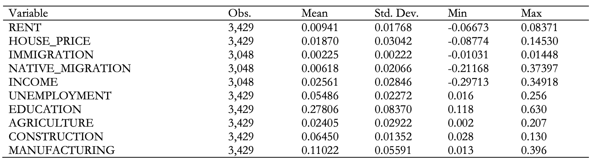4 Immigration & Housing Cost Dynamics in Modern U.S.
As expected with a country where population change varies greatly by geography, immigration dynamics vary substantially across the United States. Figure 1(a) displays the cumulative change in the immigrant stock in 381 metropolitan areas from 2013 to 2022 as a proportion of its 2022 population. This metric can be interpreted as the percent change in immigrant concentration from 2013 to 2022. Changes in immigrant concentration during this span ranged from a high of about 11% in the Miami area to a low of virtually 0 in the Bay City (Michigan) area. Perhaps unsurprisingly, the locations that saw the largest increases in immigrant concentration over the decade in question include some of America’s most populous and prominent metropolitan areas: Los Angeles, New York City, Houston, Dallas, San Jose, Boston, Washington D.C., Seattle, and Atlanta, to name a few. On a less granular scale, it seems that immigrant concentration is increasing the fastest in metropolitan areas in California, Florida, Texas, and various cities in New England and the Mid-Atlantic.
Figure 1(a): Immigration Dynamics in the U.S.

Figure 1(b): Rent Dynamics in the U.S.

Figure 1(c): House Price Dynamics in the U.S.

During this time, many metropolitan areas across the U.S. also saw substantial growth in housing costs, though to varying degrees in different locations. Many of the areas that experienced relatively large increases in rental rates and house prices from 2013 to 2022 also happen to be areas that experienced noteworthy increases in immigrant concentration. According to Figure 1(b), which displays the cumulative change in the inflation-adjusted median contract rent for a rental unit, metropolitan areas such as Atlanta, Orlando, and Nashville saw a large increase in rents; they also happen to have had large increases in immigrant concentration. A similar trend can be seen with changes in house prices. Figure 1(c) shows the cumulative change in the inflation-adjusted median value of an owner-occupied house. This suggests that metropolitan areas like Los Angeles, Seattle, and San Jose, which also saw large increases in immigrant concentration, experienced significant growth in house prices.
Overall, metropolitan areas that experienced growth in immigrant concentration from 2013-2022 also tended to experience increases in both rental rates and home values. Additionally, many metro areas with little change in immigrant concentration also saw rental rates and home values stagnate or even decline. For most metropolitan areas in the country, there seems to be an association between immigration and housing market outcomes. Indeed, Table 3 tells us that there is a slightly positive correlation between immigration and rents (correlation coefficient of 0.24) and house prices (0.15). While the strength of these associations may seem quite weak, it must be noted that many other economic factors must be accounted for when determining if there is actually a causal link.
Table 3: Correlation Matrix

In the subsequent sections, I employ several techniques to determine if there is a causal relationship between changes in immigrant concentration and changes in rental rates and house prices and describe the setup behind how I will implement them.
5 Methodology
OLS Specification
Following Saiz (2007) and much of the economic literature, I utilize Equation 1 to estimate the impact of immigration on rental rates and house prices using ordinary least squares (OLS):
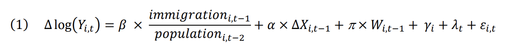The dependent variable is the change in the log of the real median rental rate/house price in MSA i in year t. Taking the natural logarithm of the outcome variable allows for simpler interpretation of the effect of immigration on rents and house prices; the coefficients on the main explanatory variable can be read as a percent change. First-differencing the outcome variable helps mitigate the effect of area-specific, time-invariant on immigrant inflow (Saiz, 2007; Sá, 2015; Unal, et. al., 2024). The main independent variable can be read as the lagged immigrant inflow as a proportion of double- lagged total population in MSA i. Adjusting immigration inflows for the total population stock helps account for the variation in immigrant inflows across MSAs of different population and housing market sizes (Sanchis-Guarner, 2023; Unal, et. al., 2024).
∆𝑋𝑖,𝑡−1 stands for lagged changes in the log of real per capita income, while 𝑊 𝑖,𝑡−1 stands for lagged unemployment rate, education level of the workforce. These three factors are proxies for the economic performance of an MSA (Saiz, 2007); it is worthwhile to control for such covariates because immigrants may be attracted to areas where the economy is performing better. MSAs with higher rates of income growth, lower unemployment, and a more educated workforce tend to be viewed as more economically robust, so there is a very real possibility that immigrants are more inclined to move to areas such as these. Additionally, following Sanchis-Guarner (2023), I control for the viability of industries that historically employ many immigrant laborers. In my model, I include the lagged proportion of the workforce employed in the agricultural sector, construction sector, or manufacturing sector. The logic behind this decision is that, depending on their skill level, immigrants may be drawn to MSAs where many of the jobs are provided by industries that are most likely to offer them ample employment opportunities.
Lastly, 𝛾𝑖 represents MSA fixed effects (FE) and 𝜆𝑡 represents year FE. Implementing MSA FE will capture the effect of any time-invariant MSA characteristics that could be correlated with changes in rental rates, house prices, or immigrant inflows. In a similar manner, the usage of year FE will control for nationwide economic shocks, such as recessions or inflationary periods, that affect immigration to all MSAs in the sample as well as the economic performance of those areas.
IV Specification
Without an exogenous immigration shock, it is difficult to estimate a causal effect of immigration on housing market outcomes because immigrant inflow may be endogenous to both rental rates and house prices. That is to say, immigrants do not randomly distribute themselves across metropolitan areas. They may be attracted to areas where housing costs are decreasing or rising more slowly (which would result in downward bias of the estimated effect), or they may be attracted to areas with rising housing costs because they believe that these price increases are reflective of growing employment opportunities in the area (Sá, 2015). Regardless of the direction of the bias created by the endogeneity issue, we require an instrument that meets two criteria. It must be relevant (it should explain, or be correlated with, the settlement patterns of immigrants) and valid (it should be correlated with either housing market outcome only by way of its effect on immigrant inflows). The aforementioned shift-share instrument, the most common instrumental variable in the related literature, should satisfy both of these criteria. It is usually structured as follows:
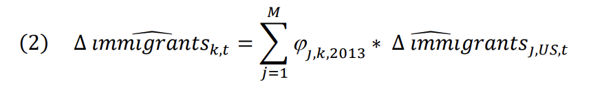∆ 𝑖𝑚𝑚𝑖𝑔𝑟𝑎𝑛𝑡𝑠𝑘,𝑡 is the predicted number of new immigrants in MSA k in year t, 𝑗,𝑘,2013 is the share of immigrants from country j that settled in MSA k in the base year, 2013., and ∆ 𝑖𝑚𝑚𝑖𝑔𝑟𝑎𝑛𝑡𝑠𝑗,𝑈𝑆,𝑡 is the predicted number of total number of immigrants from country j that settled in the US in year t. Immigrant inflows are expressed as a proportion of prior MSA population.
Before testing the aptitude of this instrument, I must make some modifications to its structure. Unfortunately, the data available to me does not allow me to implement the traditional origin-country-based shift-share instrument. With the ACS dataset I used to derive immigrant inflows, the origin countries of individuals born outside the U.S. that entered the U.S. after 2010 are not published for many MSAs. For relatively less populous metropolitan areas that receive relatively fewer immigrants, it is challenging for the U.S. Census Bureau to accurately estimate the inflow of foreign-born persons who entered the U.S. after 2010 from countries that send very fewer immigrants to the U.S. Thus, for all 381 MSAs in my dataset, there is no way to obtain the number of individuals who meet my criteria for being counted as an “immigrant” from origin countries that send very few individuals to the U.S.
Saiz (2007) does present a feasible alternative: the U.S.-level shift-share instrument. He structures it as such:
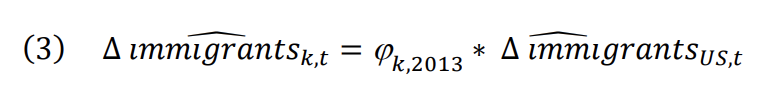∆ 𝑖𝑚𝑚𝑖𝑔𝑟𝑎𝑛𝑡𝑠𝑘,𝑡̂ is the predicted number of new immigrants in MSA k in year t, 𝑘,2013 is the share of the total immigrants that moved to MSA k in the base year of 2013, and ∆ 𝑖𝑚𝑚𝑖𝑔𝑟𝑎𝑛𝑡𝑠𝑈𝑆,𝑡̂ is the predicted total number of new immigrants who settled in the U.S. in year t. Similarly to the origin-country based instrument, immigrant inflows are expressed as a proportion of prior MSA population.
Saiz (2007) is able to predict the annual total number of new immigrants to the U.S. as a whole using a random effects regression model that uses the presence of economic and political hardships like wars, depressions, and instability in origin countries to calculate the probability that an immigrant will migrate to the United States. Lamentably, many of the data sources he uses to construct this model either no longer exist or contain no data for the period from 2013 to 2022. So, I will use the actual total number of new immigrants who settled in the U.S. in year t instead, yielding the final instrument specification:

The U.S.-level instrument still uses base-year immigrant inflows to predict inflows in subsequent years; the only real difference is the fact that all immigrants to the U.S. in a given year, regardless of their country of origin, are treated the same in terms of their probability of settling in a certain MSA. So, this IV approach does unfortunately disregard the network effects that have been deemed to be pivotal in an immigrant’s decision of where to settle. However, I will demonstrate that the modified instrument is still an excellent predictor of actual immigrant inflows, and that it is correlated with housing market outcomes only through its correlation with actual immigrant inflows.
Table 5 displays the first-stage regression results, which is designed to show if there is a strong relationship between the instrument and the main independent variable (immigration). The coefficient on the instrument is positive and significant at the 1% level, meaning my U.S.-level instrument is in fact heavily correlated with immigrant inflows. Furthermore, a first-stage F-test of this coefficient yields a test statistic of 11.86, which exceeds the threshold of 10 set by Stock & Yogo (2005). The results of this F-test again indicate that is more likely than not that the immigrant inflows predicted by the U.S.-level instrument is correlated with actual immigration. Given this evidence, I can confidently say that the U.S.-level instrument, in my case, is relevant. Validity, on the other hand, is difficult to statistically ascertain. A reduced-form regression might help in showing that the instrument is correlated with the outcome variables (rent and house prices). Indeed, the results in Table 6 demonstrate that the U.S.-level instrument is heavily associated with rent and house prices. Ascertaining if the correlation between predicted immigration and housing market indicators occurs only through actual immigrant inflows is somewhat challenging. Saiz (2007) does note that the events occurring in immigrants’ countries of origin that cause them to migrate, such as military conflicts, economic turmoil, or political instability, are very likely to be unrelated to rental rate and house price dynamics in the United States. Therefore, it is reasonable enough to assume that immigration rates predicted by the U.S.-level instrument are only linked to housing market outcomes by way of actual immigration to the U.S.
Table 5: U.S.-Level Instrument Relevance Check—First-Stage Regression
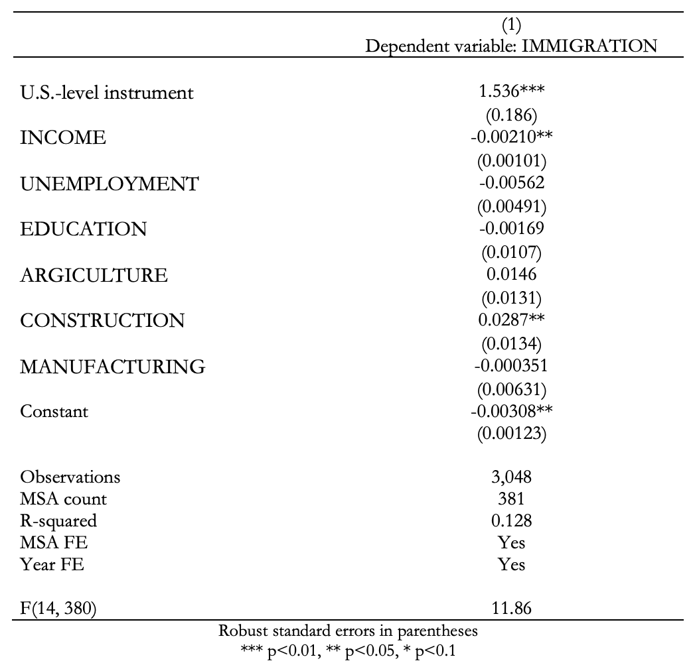Table 6: U.S.-Level Instrument Validity Check—Reduced Form Regression
Decomposition of the Total Effect of Immigration
Many studies acknowledge that the movement of native-born individuals as a result of a wave of immigration could be a confounding factor in estimating the true effect of immigration on housing cost changes. Despite this, Sanchis-Guarner (2023) authored one of the first papers that formally derived the direct effect of immigration on house prices. Following Sanchis-Guarner (2023), I estimate the following equations:
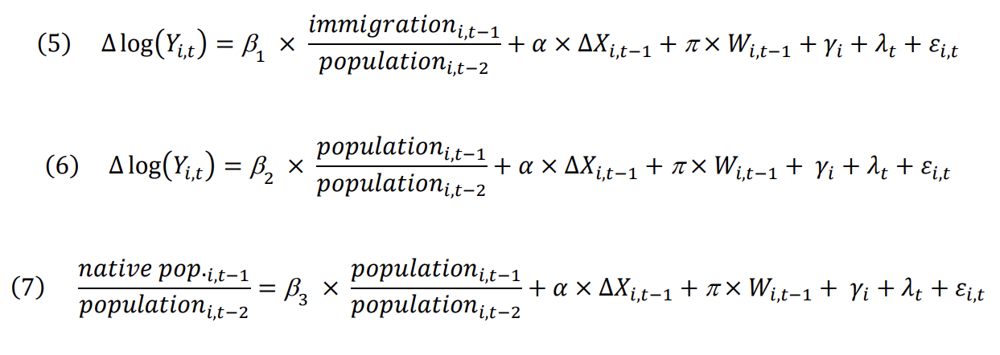Equation 5 is exactly the same as Equation 1 in the “OLS Specification” subsection; it estimates the total impact of immigration on housing market outcomes. Equation 6 measures the partial immigrant demand and Equation 7 measures the impact of immigration on native mobility. The following relationship between the coefficients on the main explanatory variables in all three equations can then be established:
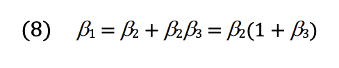What the decomposition implies is as follows (assuming all coefficients have been consistently estimated): the total effect of lagged immigrant inflow relative to double-lagged total MSA population can be decomposed into the sum of the partial effect that immigrant inflows have on housing market outcomes and the partial effects that immigrant inflows have on housing market outcomes via its impact on native migration. This can be rearranged to say that the total effect is equal to the partial effect of immigrant inflows times 1 plus the effect of immigrant inflow on native migration.
Intuitively, if 3 = 0, immigrant inflows must not be causing any inflow or outflow of native- born individuals, so the changes in housing market outcomes caused by immigrant inflows would solely be a product of changes in housing demand driven by immigrants. If 3 < 0, this would indicate that natives are moving out of the regions where immigrants are settling. In that case, our previous estimates of the total effect understate the direct effect of immigrant inflows on housing market outcomes. If 3 > 0, this would indicate that natives are moving into of the regions where immigrants are settling. In that case, our previous estimates of the total effect overstate the direct effect of immigrant inflows on housing market outcomes.
All coefficients in this specification are instrumented using the U.S.-level instrument. In her formal decomposition, Sanchis-Guarner (2023) slightly modifies her shift-share instruments to predict total MSA population as well as changes in the immigrant population in order to better account for the decisions of native-born individuals to migrate to certain areas. I do not implement this strategy because, with my data, it would create a weak (not relevant) instrument.
Nonlinear Effects
At this point in the analysis, I have only described the construction of conditional mean regressions. That is, these specifications will have predicted the average value of the change in rental rates/house prices conditional on a certain change in immigrant concentration. However, some concern has been expressed in the literature that the effect of immigration on housing costs varies between the lower and higher ends of the rental rate/house price distribution (Braakmann, 2019; Unal, et. al., 2024). In particular, because immigrants to the United States have been found to consume less housing per capita than their native-born counterparts and tend to demand less expensive housing (Greulich, et. al., 2004; Finney 2024), it is worth considering whether the effect of immigration on housing costs is stronger on the lower end of the distribution.
To accomplish this, I construct a series of quantile regressions, all of which are instrumented using the U.S.-level instrument. I estimate the effect of immigration on housing market outcomes at the 5th percentile, 25th percentile (first quartile), 50th percentile (median), 75th percentile (third quartile), and 95th percentile of the rental rate/house price distribution.
6 Results
OLS Results
Table 4 displays the results of the OLS specification of the main empirical model displayed in Section 5 for all 381 sampled MSAs. The dependent variables are the change in the log of the median contract rent for rental units and the median value of an owner-occupied housing unit. The main independent variable in all specification is the change in the immigrant population in the prior year relative to the total MSA population from two years prior. Models 1 and 4 regress housing market outcomes on only the main independent variable, immigration inflow, and include MSA and year fixed effects. Models 2 and 5 add additional controls for income, education, and unemployment. Models 3 and 6 add controls for employment in sectors of the economy that historically employ many immigrant workers.
Table 4: OLS Results
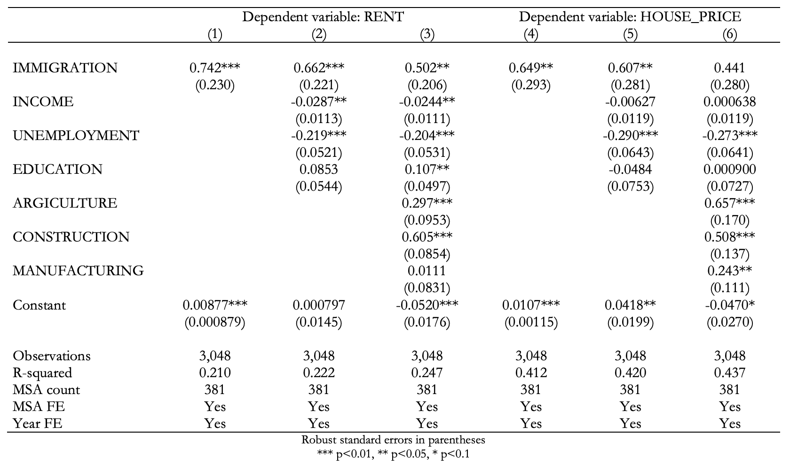For rental rates, immigration is a significant explanatory variable at the 5% level, with a 1% increase in immigrant inflow relative to total population equating to a 0.5% percent increase in the median rental rate. This figure is slightly less than the estimators in the OLS specification in studies such as those of Saiz (2007), Sanchis-Guarner (2023), and Helfer, et. al. (2023), which predict about a 1-to-1 effect. Immigrant inflows do not seem to explain changes in house prices in any significant way, as the coefficient on immigration inflow is estimated rather imprecisely. Furthermore, in this OLS specification, we predict a 1% increase in immigrant inflow relative to total population to correspond to about a 0.44% increase in median home values, whereas Saiz (2007) and Helfer, et. al. (2023) predict an increase of greater than 1%.
While these results may seem curious given the findings of the OLS specifications of previous studies, it is important to note that these estimators cannot be interpreted in a causal manner. As described in the previous section, the location decision of immigrants is not random, which could potentially have introduced self-selection bias. In the next subsection, I will review how my results change once I implement the U.S.-level instrument to control for the location decisions of immigrants.
IV Results Effects
The results from the instrumental variable specification are displayed in Table 7. Model 1 has a dependent variable of the log of the median contract rent, and Model 2 has a dependent variable of the log of the median owner-occupied house value. The independent variable in either model is lagged immigrant inflow relative to the total MSA population 2 years prior. The lagged immigrant inflow variable is instrumented using the modified shift-share instrument.
Table 7: IV Results
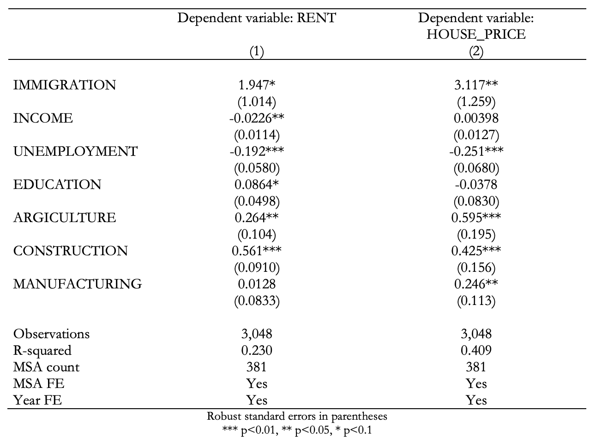For rental rates, immigration is a significant explanatory variable at the 10% level, with a 1% increase in immigrant inflow relative to total population equating to slightly less than a 2% increase in the median rental rate. This figure is slightly more than the estimators in the OLS specification in Saiz (2007), which predicts about a 1-to-1 effect. Immigration also explains house prices in a significant manner (at the 5% level). In the IV specification, we predict a 1% increase in immigrant inflow relative to total population to correspond to slightly more than a 3% increase in median home values. This estimate does not differ much from the findings from studies in other countries, where the effect of immigration can vary considerably.
This would indicate that the OLS estimators were, in fact, underestimates of the true effect of immigration on housing costs. In turn, this would suggest that, conditional on economic controls as well as MSA and year fixed effects, immigrants are being attracted to areas where housing costs are lower (or, where the growth of housing costs is slow or even negative).
Results from the Decomposition of the Total Effect of Immigration
Table 8(a) and Table 8(b) show the decomposition of the total and partial effects of immigration on rental rates and house prices, respectively. In either table, Model 3 is the exact same regression with the exact same result (both have a dependent variable of native migration and a main explanatory variable of immigrant inflows). In Table 7(a), Model 1 has a dependent variable of the log of median contract rent (in Model 1 of Table 3b, this would be the log of median home value) and an independent variable of the prior year’s immigrant inflows as a proportion of the total MSA population from 2 years prior. In Table 7(a), Model 2 has a dependent variable of the log of median contract rent (in Model 1 of Table 7(b), this would be the log of median home value) and an independent variable of the prior year’s total population change as a proportion of the total MSA population from 2 years prior. All models include the same vector of controls as Models 1 and 2 in Table 7 (the IV specification), MSA and year fixed effects, and the explanatory variables are instrumented using the U.S.-level instrument.
Table 8(a): IV Results w/ Decomposition
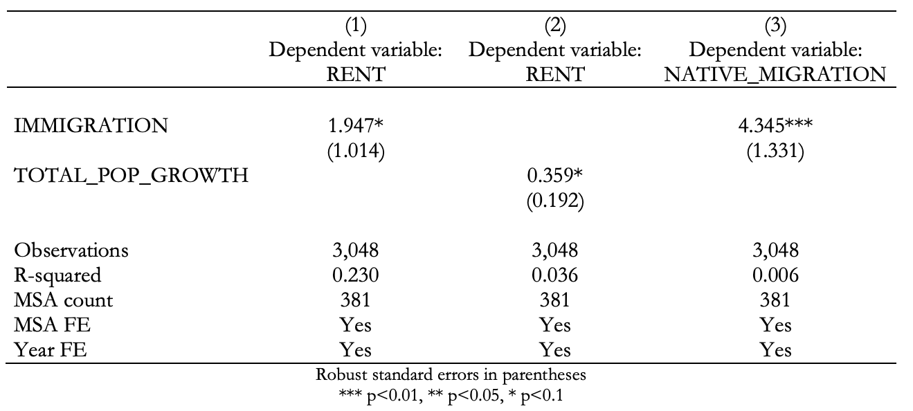Table 8(b): IV Results w/ Decomposition
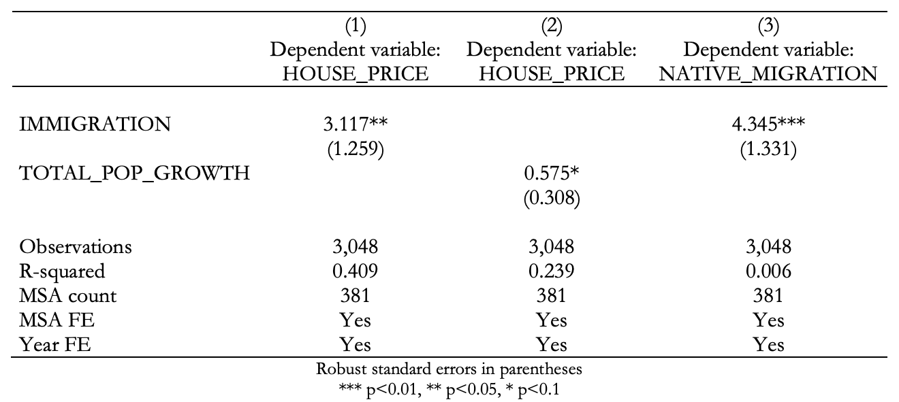The estimation of 3 shows that the effect of immigrant inflows on native migration is substantial and significant at the 1% level, so I can comfortably reject the hypothesis that immigration has no effect on native mobility. A 1% increase in immigrant inflow relative to total MSA population appears to cause more than a 4% increase in native inflow relative to total MSA population. Unlike the findings of Sá (2015) and Unal, et. al. (2024), this suggests that native-born individuals are moving into MSAs that are experiencing higher immigrant inflows.
The estimation of 2 in Model 2 of Table 8(a) shows that the direct effect of population growth attributable to immigrant inflow on rental rates is significant at the 10% level and quite small compared to the estimation of the total effect. Almost the exact same conclusion can be drawn from the estimation of 2 in Model 2 of Table 8(b) with respect to the effect on house prices. The effect of (partial) immigrant demand on rental rates and house prices is only 18.4% of the total demand effect; it can be interpreted that immigrant demand itself only accounts for about 18% of the increases in rental rates and house prices. While my estimates of the effect of immigrant demand on house prices are more than 80% lower than the estimate for the total demand effect, Sanchis-Guarner (2023) only observes hers to be 24% lower.
How can we reconcile the fact that these new estimates seem to suggest that direct demand from immigrants accounts for only a small part of the total effect? Additionally, how can we explain the contemporaneous settlement of immigrants and native-born individuals? An answer could lie in the labor market. As previously mentioned, Lewis & Peri (2015) and Edo (2019) assert that, if immigrants are less skilled than native workers, then they could be considered complements to one another in the labor market. This could help explain why immigrant inflows are accompanied by larger inflows of native-born individuals. Employers in MSAs that receive large numbers of immigrants relative to their total population may be expanding their businesses to accommodate the resultant labor supply shocks. If we assume that immigrants to the U.S. during this time frame are less skilled than native workers, then employers will demand skilled workers whose roles complement those of the less-skilled workers. Seeking these employment opportunities, native-born individuals would then be incentivized to move to cities where immigrant inflows are relatively voluminous.
When immigrants and natives arrive in these destination cities, they are unlikely to compete for the same types of housing. For example, they tend to occupy less spacious dwellings than their native counterparts (Finney, 2024) and live in more crowded conditions (Greulich, et. al., 2004). Furthermore, immigrants are less likely to compete with natives for owner-occupied housing (Borjas, 2002). If we are to believe that the immigrants that arrived in the U.S. during this time frame are less skilled than native workers, it is plausible that natives would earn more than immigrants on average and therefore demand more expensive, better-quality housing.
The last order of business in discussing the results of the decomposition is to investigate how they stack up against the IV estimates. The actual decomposition of the total effect of immigrant inflows on both rental rates and house prices in practice is strikingly close to how it should play out theoretically. Using Equation 8, the total effect of immigrant inflows on rental rates and house prices, respectively, should be as follows:
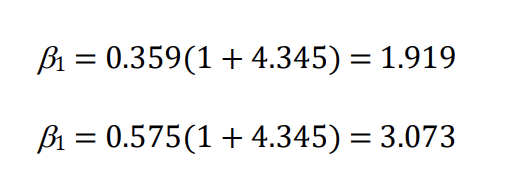These estimates are very similar to the estimates (1.947 and 3.117, respectively) in Model 1 of either table. I suspect that the small differences between the estimates predicted using the basic IV model and the model in which the total effect is decomposed can be accounted for by the mobility of immigrants that arrived in the US before 2010. I previously defined an “immigrant” as any foreign- born individual who entered the US after 2010; I also acknowledged that this could potentially introduce some measurement error in that regard. This will likely not cause much of an issue because immigrants, once they have settled in their destination country, may be less mobile within the country for several reasons. They may highly value the immigrant networks in their destination location (Borjas, 2002; Saiz, 2007), or it could be too risky for them to move elsewhere once they have secured housing and employment in their destination location.
Overall, it seems that a large chunk of the effect of immigrant inflows on both rental rates and house prices occurs due to an induced demand effect: immigrant inflows seem to be accompanied by even larger inflows of native-born individuals. So, we must exercise caution in the interpretation of future estimates of the effects of immigration on housing market outcomes. We must keep in mind that the total effect of immigrant inflows on housing costs will likely be much higher the partial (direct) effect.
IV Quantile Results
Table 9(a) displays the effect of immigrant inflows on rental rates at the 5th percentile of rental rates, first quartile, median, third quartile, and 95th percentile. Table 9(b) displays similar estimations with house prices as the dependent variable. Once again, the same vector of controls as Models 1 and 2 in Table 7 (the IV specification), MSA and year fixed effects are included, and the explanatory variables are instrumented using the U.S.-level instrument.
Table 9(a): IV Quantile Regressions
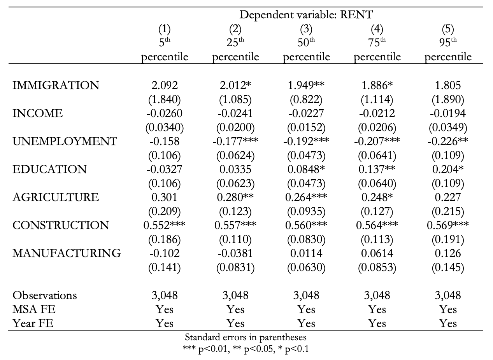Table 9(b): IV Quantile Regressions
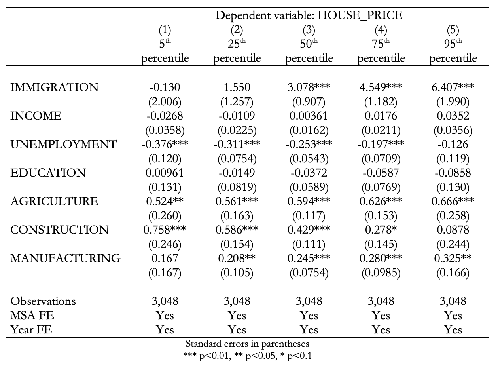All models from Table 9(a) demonstrate that the effect of immigration on rental rates does not vary widely over the rental rate distribution. The estimates from the IV specification in Model 1 of Table 6 predicted about a 2% increase to result from a 1% increase in immigration relative to an MSA’s total population; the predicted effect does not deviate much from 2% at the lower, middle, and upper portions of the rent distributions. Furthermore, the effects at the 5th and 95th percentile are very imprecisely estimated, so it is unclear if immigrants to the U.S. during this study period actually affect the rental rates on the tails of the distribution. This differs from the findings of Braakmann (2019), who finds that immigration significantly impacts the lower end of the price distribution, and Unal, et. al. (2024), who find a somewhat pronounced impact at the upper end.
On the contrary, the models presented in Table 9(b) display massive variation in the effect of immigration across the house price distribution. For reference, Model 2 from Table 6 predicted about a 3% increase in house prices to result from a 1% increase in immigration relative to an MSA’s total population. Models 1 and 2 of Table 9(b) suggest that the effect is virtually indistinguishable from 0 below the median. Above the median, however, Models 4 and 5 the effect is probably much greater than 3%. This finding differs from the effects found by Braakmann (2019) and Unal, et. al. (2024) that the upper end of the house price distribution in other countries, so there could be some unobserved factor that is unique to U.S. immigration patterns that either directly causes or induces demand for housing at the upper half of the distribution. Several phenomena could explain this somewhat curious finding. Immigrants that settled in MSAs in the upper end of the house price distribution during the study period could themselves be relatively affluent (at least compared to other immigrants that settled in metropolitan areas in the U.S. during the same time frame) and therefore be demanding more expensive housing. Given that these estimates are of the total demand effect of immigration on house prices, it is also quite feasible that native migration could be driving the increased demand for housing at the upper end of the distribution. If we again assume that native-born individuals are more skilled (with regard to the labor market) than immigrants, and that they earn more than immigrants, if they move to a new city seeking employment, their housing preferences are more likely to reflect that.
7 Robustness Checks
Addressing Measurement Error in the Immigration Variable
Table 10: OHSS Sample of MSAs
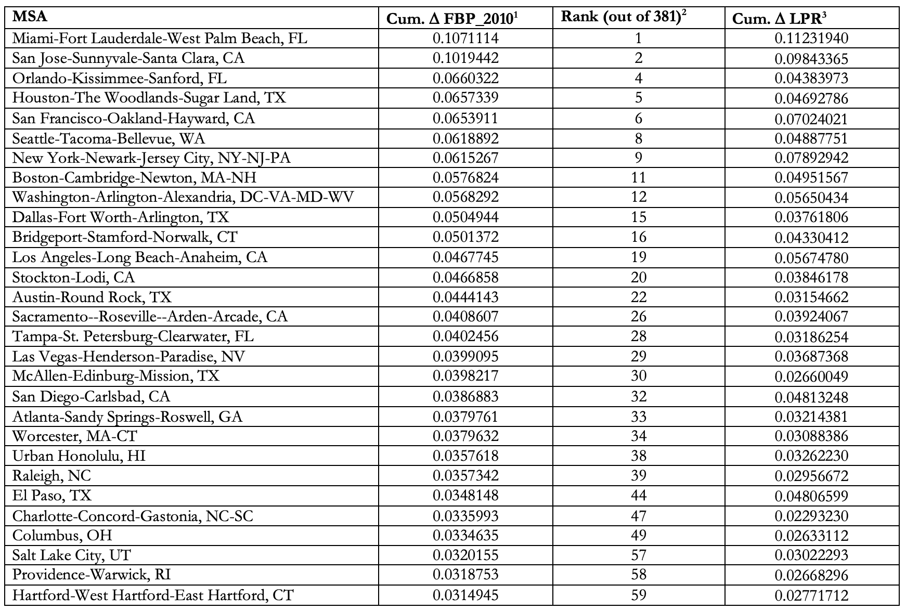 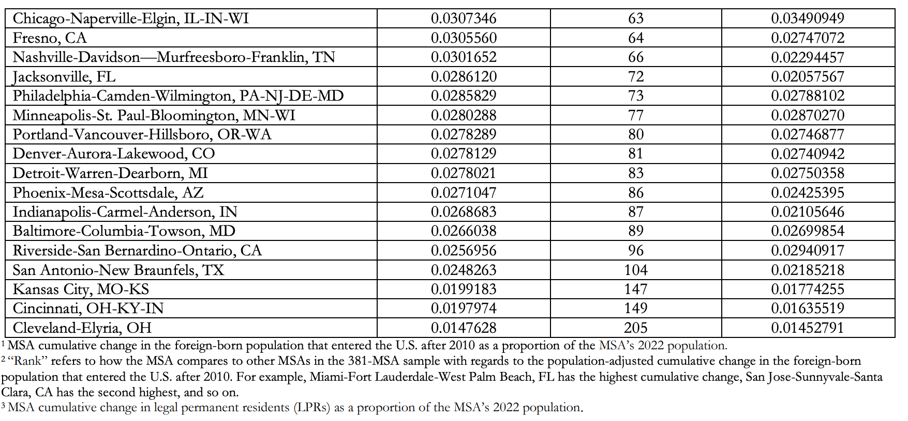One potential issue with my results could be the fact that immigrant inflows are improperly measured. Defining “immigrant inflow” as each MSA’s change in the foreign-born individuals that entered the U.S. after 2010 might not accurately reflect immigrants that arrived in the U.S. within the prior year. I present an alternative measurement of the immigration variable: the number of new legal permanent residents (LPRs) in an MSA in a given year. The Office of Homeland Security Statistics (OHSS) supplies data on the number of new LPRs annually in the 50 MSAs with the highest number of new LPRs in a given year. For the sample period of 2013-2022, 46 MSAs have LPR data for 9 or more years. The list of these 46 MSAs is displayed in Table 10. I then use this data to construct a new immigrant inflow variable, which represents the number of new LPRs added to an MSA in the prior year as a proportion of the total MSA population two years prior:
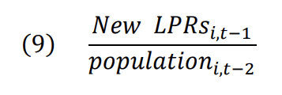In Tables 10, 11(a), and 11(b), I will refer to this variable as “LPR_CHANGE”.
I expect that new LPR inflow relative to total population will have a lesser effect on both rental rates and housing prices when compared to the estimates using the old immigrant inflow measure. As a whole, LPR inflows into the U.S. are far less voluminous that those of all types of immigrants combined, as evidenced by the differences between cumulative immigrant inflow and cumulative LPR inflow in the first and third columns of Table 10. Additionally, LPRs often have lived in the U.S. for some time before they are granted permission to legally reside in the U.S., sometimes even for several years. So, if many of the new LPRs observed in these MSAs have resided in the U.S. for several years before attaining LPR status, they, too, may not be an accurate measure of immigrant inflow. This is because, after having lived in the U.S. for a certain period of time, immigrants often assimilate into the American economy and exhibit housing preferences closer to those of natives (Borjas, 2002).
To test if this alternative measure affects my estimate, I regress housing market outcomes on LPR inflow relative to total population with the same set of controls as seen in the models in Table 7. I additionally employ my U.S.-level instrument (which I recalculate to account for the reduced sample) and MSA and year fixed effects. The relevance test is shown in Model 2 of Table 11, which yields an F-statistic of 90.49, far exceeding the weak instrument threshold of 10 established by Stock & Yogo (2005). While the reduced form regressions in Table 12 do indicate that the U.S.-level instrument and both housing market outcomes are correlated, I also assume the instrument is valid for the same reasons as described in the “IV Specification” subsection of Section 5.
Table 11: Robustness check—1st stage regressions
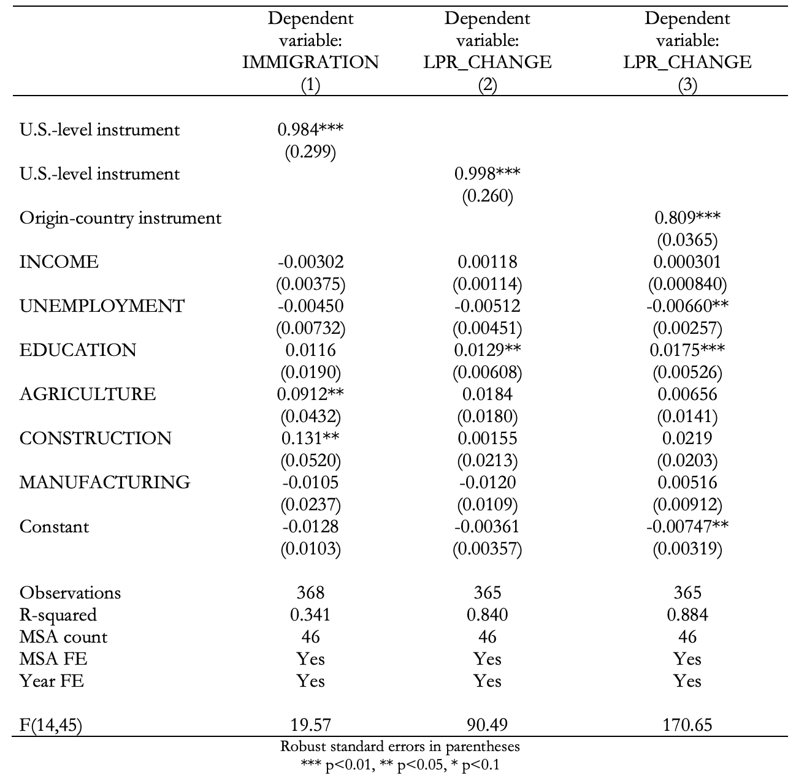Table 12: Robustness check—Reduced form regressions
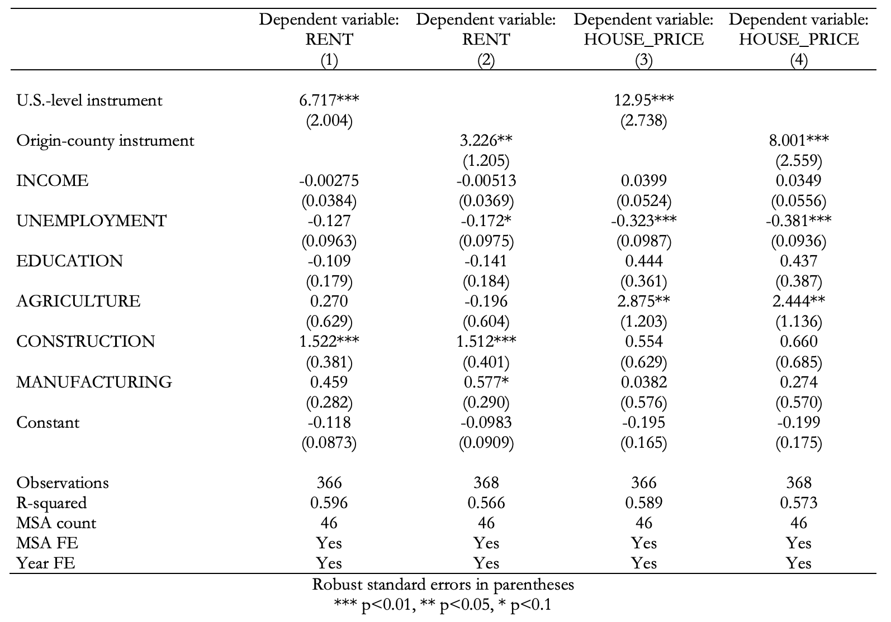It would be unfair to directly compare the results of this specification to my prior results from Table 7. After all, the estimates from this section have a substantially smaller sample size that is not at all like the sample of 381 MSAs I introduced in Section 3. As shown by the “Rank” column in Table 10, of the 46 MSAs in the reduced sample, 22 are in the top 10% of total-population-adjusted cumulative immigrant inflow (the top 10% of the original 381 MSAs) and all but 5 are in the top 25%. Therefore, most of the MSAs in the reduced sample are relatively high-immigration cities, meaning that the effect of immigration on house prices with this 46-MSA sample is sure to be different from the estimates with the full 381, which contains a mix of high- and low-immigration cities.
So, to obtain a more accurate comparison between the two measures of immigrant inflow, I also regress housing market outcomes on immigrant inflow relative to population (labeled as “IMMIGRATION” in Table 11 and Tables 13(a) and 13(b)) using the same sample of 46 MSAs. I recalculate the U.S.-level instrument accordingly and apply it to the immigration variable.
Table 13(a): Robustness check—Tests of alternative immigrant inflow measures and shift-share instrument
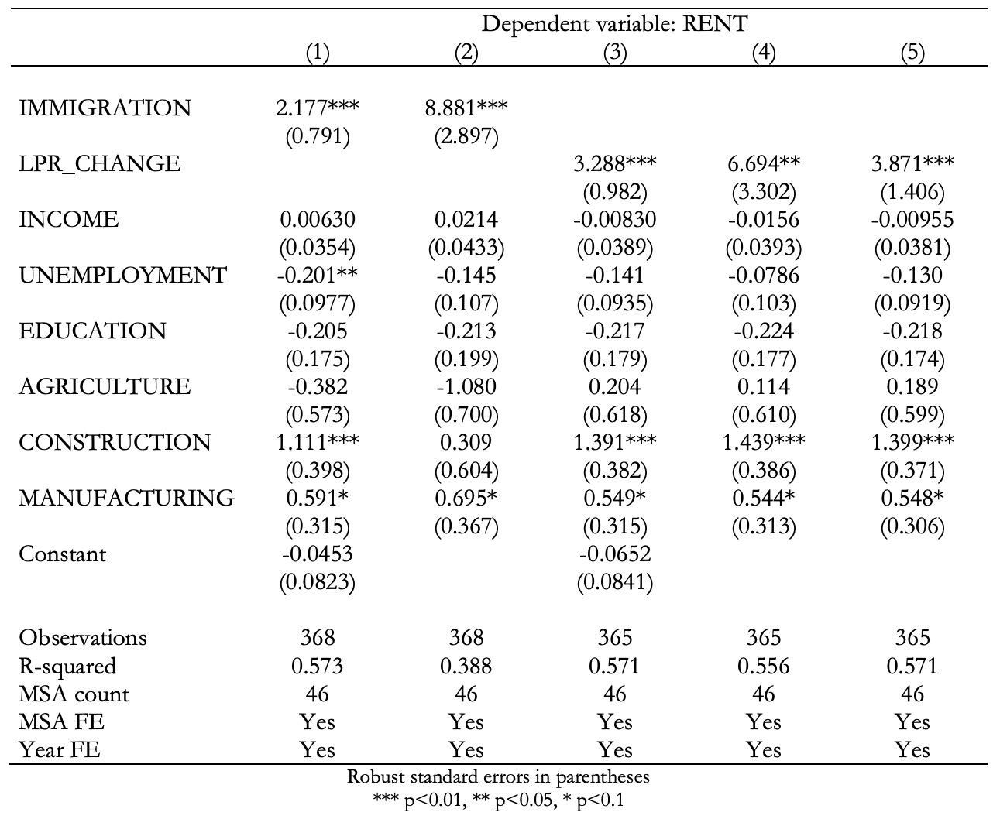Table 13(b): Robustness check—Tests of alternative immigrant inflow measures and shift-share instrument
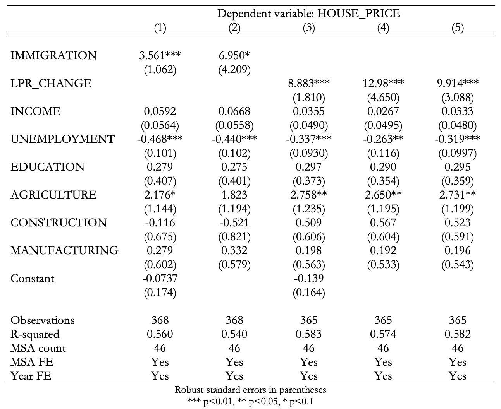In Table 13(a), Model 1 represents the OLS specification of the effect of immigrant inflows on rental rates, while Model 2 represents the IV specification of that same effect using the U.S.-level instrument. The OLS estimate more than quadruples once it is instrumented. This IV estimate tells us, for the 46-MSA sample, an increase in immigration equal to 1% of an MSA’s population is predicted to increase rental rates by almost 9%. Model 3 represents the OLS specification of the effect of new LPR inflow on rental rates, and Model 4 shows the IV specification of the same effect using the U.S.-level instrument. While the jump in the magnitude of the estimate is not quite as large, it is certainly also sizeable. The IV estimate in Model 4 predicts an increase in LPR inflow equal to 1% of an MSA’s population is predicted to increase rental rates by almost 7%. Despite the fact that the estimates using LPR inflows as a measure of immigration are slightly lower, both measures predict an economically significant reaction to foreign migration. Models 1-4 of Table 13(b) show the exact same progression, but with house prices as the dependent variable. Once again, the magnitude of the estimator experiences a substantial increase (from 3.6 to about 7) between the OLS and IV models (Models 1 and 2, respectively) that use my original immigrant inflow variable. The difference between the OLS and IV models (Models 3 and 4, respectively) that utilize the alternative measure of immigrant inflow is slightly smaller but still very noticeable, leading us to make a similar conclusion as with the previous subsection. Because the estimates do not differ significantly between the specifications with different measurements of foreign migration, this exercise, albeit with a limited sample, offers some evidence that measurement error was not a driving force behind any differences between my results and those of studies such as Saiz (2007).
U.S.-Level Instrument vs. Origin-Country Shift-Share Instrument
On top of allowing me to test an alternative measure of immigrant inflows, the usage of the OHSS dataset on new LPR inflows also presents an opportunity to test the efficacy of the version of the shift-share instrument more traditionally used in the literature. The OHSS dataset breaks down the yearly inflow of LPRs by country of origin, including the number of new LPRs from over 200 countries and territories of origin in each MSA.
I previously described the structure of the origin-country-based shift-share instrument in the “IV Specification” subsection of Section 5. For our purposes, however, we will be using LPR inflow in the base year (2013) to predict actual LPR inflow, so the origin-country instrument will be structured like so:
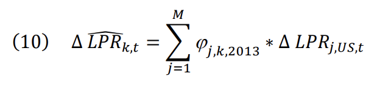I test the relevance of the origin-country shift-share instrument in Model 3 of Table 11 and find that, though the first-stage regression, the instrument and immigrant inflows are extremely correlated. An F-statistic of 171 further reinforces this idea, so I have few doubts about the relevance of the origin-country instrument. As for the validity of this instrument, I find through Models 2 and 4 of Table 12 that the shift-share instrument is highly correlated with both rental rates and house prices. Following Saiz (2007), I also assume that immigration rates predicted by the instrument are only linked to housing market outcomes by way of actual immigration to the U.S due to the exogeneity of events in origin countries that might motivate individuals to immigrate.
Model 5 of Table 13(a) presents the IV estimate of the effect of LPR inflow on rental rates, using the origin-country instrument. This model demonstrates that an increase in immigration equal to 1% of an MSA’s population is predicted to increase rental rates by a little less than 4%, an effect that is significantly lower than the effect predicted in the IV specification using the U.S.-level instrument in Model 4 (which as almost 7%). Model 5 of Table 13(b) presents the IV estimate of the effect of LPR inflow on house prices, again instrumenting with the origin-country instrument. The predicted effect of an increase in immigration equal to 1% of an MSA’s population on house prices is almost 10%, which, again, is lower than the near 13% increase predicted in Model 4. So, it seems that, by and large, the origin-country based instrument yields slightly lower estimates of the effect of LPR inflow than the U.S.-level instrument.
Referring back to Model 2 of Table 11, the U.S.-level instrument I constructed did meet the criterion of yielding a first-stage F-statistic of more than 10, though the first-stage estimator did not clear that threshold by an extremely wide margin. On the other hand, the specification with the origin-country instrument yielded an F-statistic of 171, so it follows that the origin-country instrument is the far stronger, or more relevant, instrument of the two. This could help explain why the IV estimates using the origin-country instrument differ from those that utilize the U.S.-level instrument.
8 Conclusion
This study has investigated the short-term impact of immigration on rental rates and house prices across metropolitan areas in the United States. To analyze this, I employed a panel that covers 381 metropolitan statistical areas across the United States over the period 2013 to 2022. The endogeneity of immigrant inflow to housing market indicators posed potential bias that I mitigated through the implementation of a shift-share instrument. With the use of this instrument, I estimated that immigration has a significantly positive on both rental rates and house prices. My findings indicated that an increase in immigrant inflow equal to 1% of a metropolitan area’s population equates to around a 2% in rental rates and a 3% increase in house prices, suggesting that immigrants do not displace natives. These estimates are slightly more than those of Saiz (2007), though as similar type of effect was observed elsewhere in the literature, such as the studies of Helfer, et. al. (2023), Sanchis-Guarner (2023) and Unal, et. al., (2024). Not only did my results insinuate that native displacement is not occurring, through my decomposition of the total demand effect of immigration on the housing market into the effects from direct demand of immigrants and induced demand caused by native migration, I found that substantial native inflow often accompanies immigrant inflow, a finding observed empirically by few papers in the economic literature outside of Sanchis-Guarner (2023). My estimates of the partial demand effect of immigration on rental rates and house prices were more than 80% lower than the estimates of the total demand effect. Finally, I found no discernible difference between the effects of immigration on the lower and upper ends of the rent distribution, an estimate that differs from those of Braakmann (2019) and Unal, et. al. (2024). That said, I did predict that immigration has a visible effect on the upper end of the house price distribution, a finding that again differs from the aforementioned studies.
My findings present some rather salient government policy implications, both at the federal and local levels. The direct demand effect of immigration is relatively low compared to the total demand effect, so, in the case of metropolitan areas in the modern United States, it could very well be that the importance of immigration policy as it pertains to the housing market is rather overblown. Asserting that rising costs of living are caused by immigration-driven demand shocks is a rather contentious point in the first place, given that the empirical literature is still quite divided on the true effect of immigration on many economic outcomes in the U.S., and using these increases in housing costs as a justification for more restrictive immigration policy at the federal level may be unfounded. Having observed that the effect of immigration varies greatly across the house price distribution, with particularly sizeable effects at the upper end, state legislatures and municipal governments should consider policies that serve to expand the supply of owner-occupied housing with above-median pricing. This could entail, for example, initiatives that increase the volume of new construction permits. Some empirical work has explored the relationship between immigrant inflows and expansionary housing policy at the municipal level (Howard, 2020), though a study on this topic with a larger scope could be an interesting avenue for future research.
To add to that point, one potential area of improvement would be to consider how supply-side factors might interact with the effect immigration has on the housing market. An extension to this work could include controls for factors such as availability of undeveloped land, the stock of vacant houses and rental units as well as vacancy dynamics, and the issuing of construction permits. Such an exercise would not only offer insights into how the supply of housing affects and is affected by immigration patterns, but it would also allow for the investigation of how legislatures react to rental rate or house price increases in response to immigration and a critique of their policies.
References
Accetturo, A., Manaresi, F., Mocetti, S., & Olivieri, E. (2014). Don’t stand so close to me: The urban impact of immigration. Regional Science and Urban Economics , 45(1), 45–56.
Bartel, A. (1989). Where do the new US immigrants live? Journal of Labor Economics, 7(4), 371-391.
Borjas, G. J. (1994). The Economics of Immigration. Journal of Economic Literature, 32(4), 1667-1717.
Borjas, G. J. (2002). Homeownership in the immigrant population. Journal of Urban Economics, 52, 448-476.
Braakmann, N. (2019). Immigration and the property market: Evidence from England and Wales. Real Estate Economics, 47(2), 509–533.
Card, D. (1990). The Impact of the Mariel Boatlift on the Miami Labor Market. Industrial and Labor Relations Review, 43(2), 245-257.
Card, D. (2001). Immigrant Inflows, Native Outflows, and the Local Market Impacts of Higher Immigration. Journal of Labor Economics, 19(1), 22-64.
Carmotta, S.A. & Zeigler, K. (2025). Foreign-Born Number and Share of U.S. Population at All-Time Highs in January 2025. Center for Immigration Studies. https://cis.org/Report/ForeignBorn- Number-and-Share-US-Population-AllTime-Highs-January-2025
Congressional Budget Office (2024). The Demographic Outlook: 2024 to 2054. https://www.cbo.gov/publication/59697
Edo, A. (2019). The Impact of Immigration on the Labor Market. Journal of Economic Surveys, 33(3), 922-948.
Fabina, J. (2024). Cost of Rent and Utilities Rose Faster Than Home Values in 2023. United States Census Bureau. https://www.census.gov/library/stories/2024/09/acs-rent-burden.html
Federal Reserve Bank of Minneapolis. (2025). Consumer Price Index, 1913-. [Data set]. https://www.minneapolisfed.org/about-us/monetary-policy/inflation-calculator/consumer-price-index-1913-
Finney, M. M. (2024). Immigration and the demand for urban housing. The Annals of Regional Science, 72, 601-616.
Forero-Vargas, D. & Iturra, V. (2022). Assessing the impact of recent Venezuelan immigration on housing rents in Colombia. Spatial Economic Analysis, 17(4), 520-537.
Friedberg, R. M., & Hunt, J. (1995). The Impact of Immigrants on Host Country Wages, Employment and Growth. Journal of Economic Perspectives, 9(2), 23-44.
Greulich, E., Quigley, J. M., Raphael, S., Tracy, J., & Jasso, G. (2004). The Anatomy of Rent Burdens: Immigration, Growth, and Rental Housing. Brookings-Wharton Papers on Urban Affairs, 149-205.
Helfer, F., Grossmann, V. & Osikominu, A. (2023). How does immigration affect housing costs in Switzerland? Swiss Journal of Economics and Statistics, 159(5).
Howard, G. (2020). The Migration Accelerator: Labor Mobility, Housing, and Demand. American Economic Journal: Macroeconomics, 12(4), 147-179.
Lewis, E. & Peri, G. (2015). Chapter 10 – Immigration and the Economy of Cities and Regions. Handbook of Regional and Urban Economics, 5, 625-685.
Office of Homeland Security Statistics. (2022). Yearbook of Immigration Statistics. U.S. Department of Homeland Security. [Data set]. https://ohss.dhs.gov/sites/default/files/2024-03/2023_0818_plcy_yearbook_immigration_statistics_fy2022.pdf
Partridge, M. D., Rickman, D. S., & Ali, K. (2009). Recent Immigration: The Diversity of Economic Outcomes in Metropolitan America. Cityscape, 11(3), 29-57.
Sá, F. (2015). Immigration and house prices in the UK. The Economic Journal, 125(587), 1393-1424.
Saiz, A. (2003). Room in the Kitchen for the Melting Pot: Immigration and Rental Prices. The Review of Economics and Statistics, 85(3), 502-521.
Saiz, A. (2007). Immigration and housing rents in American cities. Journal of Urban Economics, 61(2), 345-371.
Sanchis-Guarner, R. (2023). Decomposing the impact of immigration on house prices. Regional Science and Urban Economics, 100.
Stock, J. H., & Yogo, M. (2005). Testing for weak instruments in linear IV regression. In Identification and Inference for Econometric Models: Essays in Honor of Thomas Rothenberg. Edited by Donald W. K. Andrews and James H. Stock. Cambridge: Cambridge University Press, 5, 80–108.
Tumen, S. (2016). The Economic Impact of Syrian Refugees on Host Countries: Quasi-Experimental Evidence from Turkey. The American Economic Review, 106(5), 456-460.
Unal, U., Hayo, B., & Erol, I. (2024). The Effect of Immigration on Housing Prices: Evidence from 382 German Districts. The Journal of Real Estate Finance and Economics.
U.S. Bureau of Economic Analysis. (2023). CAINC1 County and MSA personal income summary: personal income, population, per capita personal income. [Data set]. Retrieved from https://apps.bea.gov/itable/ReqID=70&step=1&_gl=1*b1y1mg*_ga*NjIxNzM4NDE4LjE3MjU0NTY5NjI.*_ga_J4698JNNFT*MTcyNTQ1Njk2Mi4xLjEuMTcyNTQ1NzE5Mi42MC4wLjA.#eyJhcHBpZCI6NzAsInN0ZXBzIjpbMSwyOSwyNSwzMSwyNiwyNywzMF0sImRhdGEiOltbIlRhYmxlSWQiLCIyMCJdLFsiTWFqb3JfQXJlYSIsIjUiXSxbIlN0YXRlIixbIjUiXV0sWyJBcmVhIixbIlhYIl1dLFsiU3RhdGlzdGljIixbIjMiXV0sWyJVbml0X29mX21lYXN1cmUiLCJMZXZlbHMiXSxbIlllYXIiLFsiLTEiXV0sWyJZZWFyQmVnaW4iLCItMSJdLFsiWWVhcl9FbmQiLCItMSJdXX0=
U.S. Bureau of Labor Statistics. (2025). 1998-2025 Metropolitan Area Employment and Unemployment(Monthly). [Data set]. Retrieved from https://www.bls.gov/bls/news-release/metro.htm#2023
U.S. Census Bureau. (2020). Historical Delineation Files, Core based statistical areas (CBSAs), metropolitan divisions, and combined statistical areas (CSAs). [Data set]. Retrieved from https://www.census.gov/geographies/reference-files/time-series/demo/metro-micro/historical-delineation-files.html
U.S. Census Bureau. (2020). Using 1-Year or 5-Year American Community Survey Data. https://www.census.gov/programs-surveys/acs/guidance/estimates.html#:~:text=3%2Dyear%20estimates*-,5%2Dyear%20estimates,Annually%20released:%202009%2Dpresent
U.S. Census Bureau. (2023). Educational Attainment, 2010-2023 American Community Survey 5-year estimates. [Data set]. Retrieved from https://data.census.gov/table/ACSST5Y2022.S1501?t=Educational%20Attainment&g=010XX00US$31000M1&tp=true
U.S. Census Bureau. (2023). Median Contract Rent (Dollars), 2010-2023 American Community Survey 5-year estimates. [Data set]. Retrieved from https://data.census.gov/table/ACSDT5Y2022.B25058?t=Renter%20Costs&g=010XX00US$31000M1&moe=false&tp=true
U.S. Census Bureau. (2023). Median Value (Dollars), 2010-2023 American Community Survey 5-year estimates. [Data set]. Retrieved from https://data.census.gov/table/ACSDT5Y2022.B25077?t=Housing:Housing%20Value%20and%20Purchase%20Price&g=010XX00US$31000M1&moe=false&tp=true
U.S. Census Bureau. (2023). Selected Economic Characteristics, 2010-2023 American Community Survey 5-year estimates. [Data set]. Retrieved from https://data.census.gov/table/ACSDP5Y2013.DP03?t=Industry&g=010XX00US$31000M1&moe=false&tp=true
U.S. Census Bureau. (2023). Selected Social Characteristics in the United States, 2010-2023 American Community Survey 5-year estimates. [Data set]. Retrieved from https://data.census.gov/table/ACSDP5Y2022.DP02?t=Ancestry&g=010XX00US$31000M1
Wozniak, A., & Murray, T. J. (2012). Timing is everything: Short-run population impacts of immigration in US cities. Journal of Urban Economics, 72(1), 60–78.